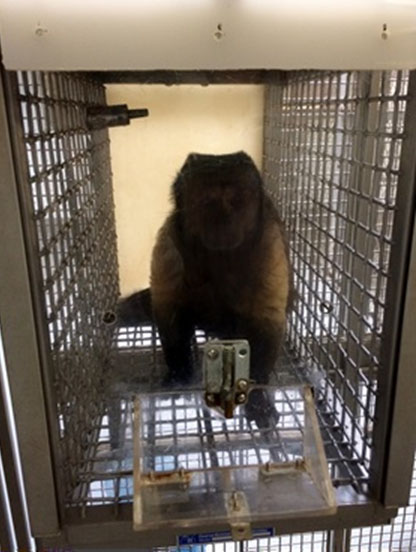
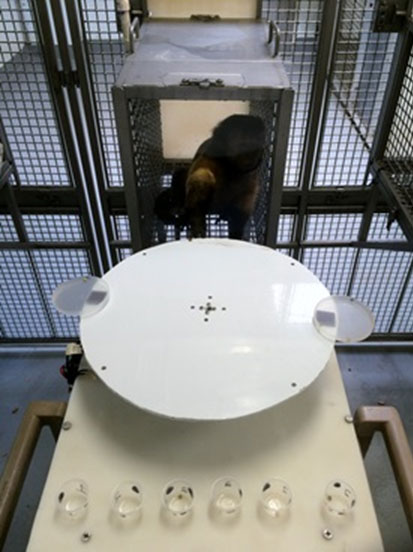
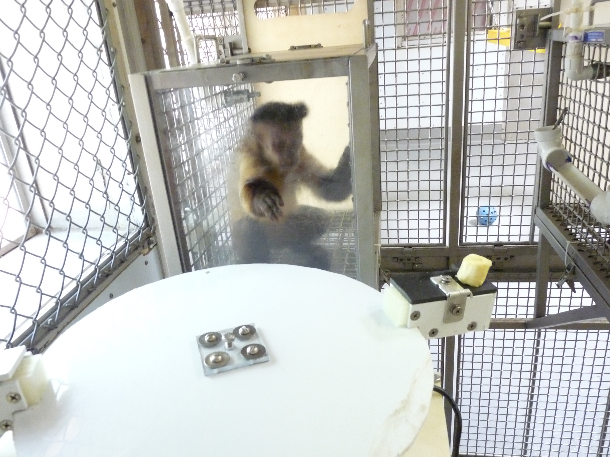

Paper: Self-Control in Capuchin Monkeys
Published in Behavioural Processes [2016, 129:68-79]
My Role
I directly conducted two of the experiments in this study along with my colleague Mattea Rossettie involving both tasks. I also played a heavy role in the data analysis and contributed to the journal article writeup which is now published.The Story
Problem
Good things come to those who wait right?
Self-control is when you delay taking a reward for an even better one later. It's something that a lot of us struggle with in day to day life when it comes to things like financial decisions and health and well being. If humans have trouble with this, what level of self-control can we expect from a capuchin monkey? We already know that capuchins can improve when it comes to self-control based tasks, but what is the key to this improvement? This is the question we asked throughout the five experiments we conducted during this study.
Methodology
- • All capuchins experienced the same two conditions, the Rotating Tray task and the Accumulation task.
- • The Accumulation task is just like those videos you might have seen of children sitting at a table with a plate where the researcher is placing one marshmallow after another on the plate. The rules are simple, the longer you wait, the bigger the reward.
(We used capuchin-appropriate food of course, a marshmallow is almost half the size of their head after all.) - • The Rotating Tray task was inspired by a sushi conveyor belt. If a plate you're not interested comes down the belt, you can pass over it in favor of a plate you prefer later. This idea translated to a rotating tray with two plates were fixated. These rotated towards and away where the capuchins were situated. If the capuchins didn't take what was on the plate, they could wait and see if they liked the next plate (which always had a larger quantity of food) better.
- • The temporal and reward parameters varied depending on the accumulation task, this let us isolate desired variables to hone in on what significant effects were in play in the study.
- • There were a set of experienced monkeys whom we studied along with a group of task-naïve monkeys whom acted as a sort of control for the previous group.
What we Found
- • Like humans, Capuchin monkeys show a range of ability when it comes to self control across tasks; this applied both between and within monkeys.
- • Their performance seemed more related to how long they had to wait between food increments than the overall amount of food they were presented with.
- • The task-naïve monkeys showed more limited self-control than the experienced monkeys.
- • Finally, while neither task was better at promoting self-control than the other, our findings suggested that Capuchins might improve with experience on these delay of gratification tasks!

Lily here is one of the experts, both in self-control performance and being super super cute
Article
Beran, M. J., Perdue, B. M., Rossettie, M. S., James, B. T., Whitham, W., Walker, B., Futch, S. E., Parrish, A. E. (2016). Self-control assessments of capuchin monkeys with the rotating tray task and the accumulation task. Behavioural Processes, 129, 68-79. doi:10.1016/j.beproc.2016.06.007
Science Direct | PubMed